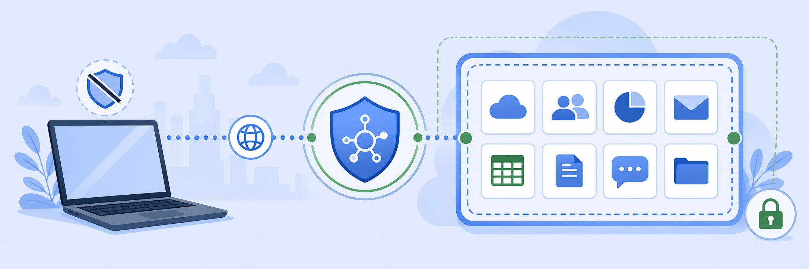
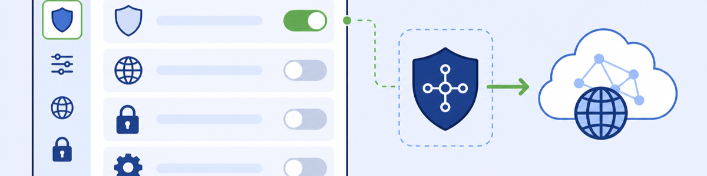
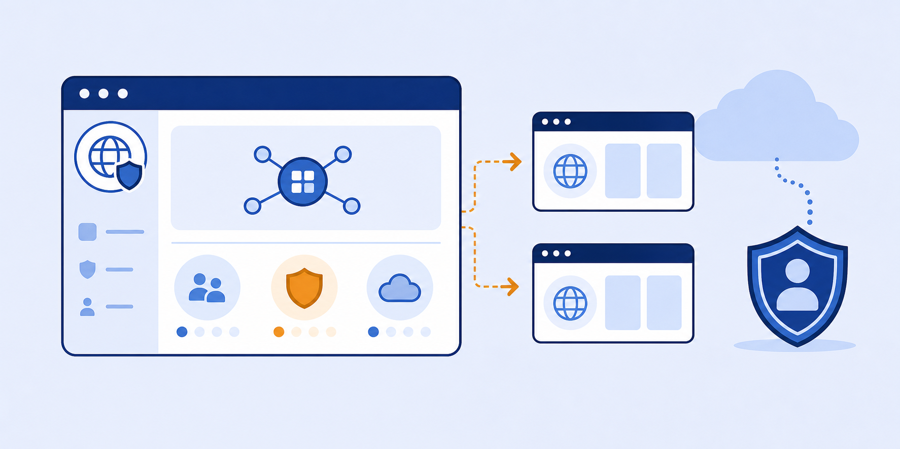
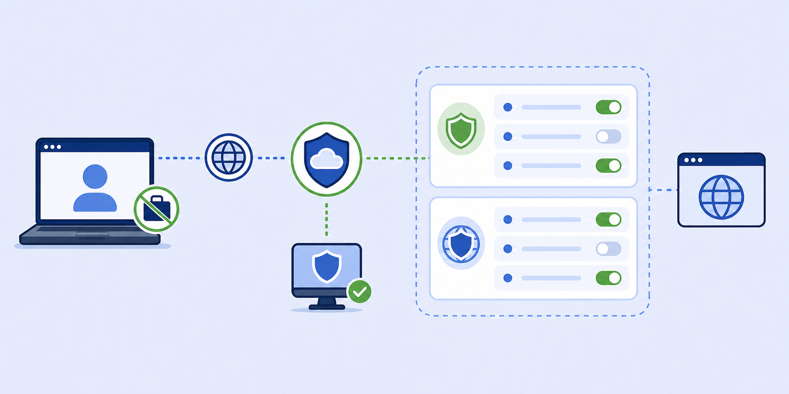
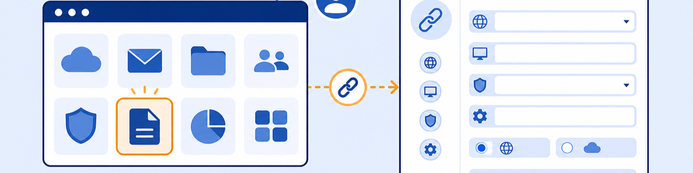
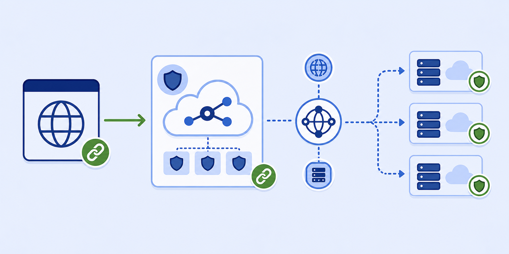
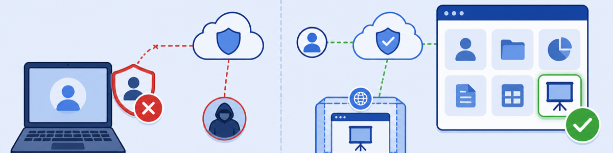

Lab 10: Securing Access to SaaS Apps from BYO/Unmanaged Devices via ZPA
Scenario: Organisations increasingly need to provide contractors and unmanaged devices with access to sanctioned SaaS applications. ZPA User Portal 2.0 with Browser Isolation provides frictionless, agentless access: the user logs into the User Portal from any browser, clicks an app tile, and the SaaS app opens in an isolated browser session with all security controls enforced.

ZPA User Portal 2.0 + BI is the "zero-footprint" BYOD solution. No endpoint agent, no VPN, no corporate image required. The device only needs a browser. All access is isolated — exfiltration controls apply even on unmanaged hardware.
- The ZPA Isolation Profile for BYOD has "Forward Internet Traffic via ZIA" enabled. Why is this setting necessary when the SaaS app (M365) is accessed via ZPA Browser Access?
- The BYOD Access Policy allows Client Types: Web Browser AND Client Connector. Why include both, and what happens if a managed device user (with ZCC installed) clicks the same M365 tile in the User Portal?
- The lab uses IdP Conditional Access to block direct M365 access from unmanaged devices. Why is this the right enforcement point rather than a ZPA policy?
Task 10.1: Review the ZPA Isolation Profile for BYOD
1 Log In to ZPA and Review the TZTE BYOD Restricted Profile
- In a browser, go to the ZPA Admin Portal:
https://admin.private.zscaler.com. - Log in with:
- Admin User ID:
<prefix>-ADMIN@thezerotrustexchange.com - Session Password: <Session Password>
- Admin User ID:
- Navigate to Configuration & Control › Browser Isolation › Isolation Profiles.
- Click the pencil (edit) icon next to TZTE BYOD Restricted.
- On the Company Settings tab, scroll to TRAFFIC FORWARDED TO ZIA.
- Confirm Forward Internet Traffic via ZIA is Enabled, and note the Organisation ID and Cloud Name.
- Click Cancel.

Task 10.2: Review the M365 Application Segment
1 Verify the M365 SaaS App Segment Configuration
- Navigate to Resource Management › Application Management › Application Segments.
- Click the pencil icon next to the M365 segment.
- Confirm the application hostname: office.thezerotrustexchange.com.
- Note: Access Type: Browser Access and Domain for Browser Isolation: myapps.microsoft.com.
- This configuration routes office.thezerotrustexchange.com traffic via ZPA to the actual Microsoft 365 application.
- Click Cancel.

Task 10.3: Review Access and Isolation Policies
1 Review the BYOD Apps Access Policy
- Navigate to Policy › Access Policy.
- Click the pencil icon next to BYOD Apps Access.
- Review the Criteria: Application Segments (ServiceNow, Salesforce, M365), Client Types (Web Browser, Client Connector).
- Click Cancel.
2 Review the Isolate BYOD Policy
- Navigate to Policy › Isolation Policy.
- Click the pencil icon next to Isolate BYOD.
- Verify: Rule Action: Allow Isolation, Isolation Profile: TZTE BYOD Restricted.
- Review Criteria: Application Segments (ServiceNow, M365), Client Types (Web Browser).
- Click Cancel.

Task 10.4: Review the M365 Portal Link
1 Confirm M365 is Published to the User Portal
- Navigate to Resource Management › User Portal › Portal Links.
- Click the pencil icon next to the M365 link.
- Verify: User Portal: The Zero Trust Exchange User Portal, Domain: office.thezerotrustexchange.com.
- Click Cancel.

Task 10.5: Review DNS (CNAME) Configuration
1 Find the CNAME for the M365 Browser Access App
- Navigate to Resource Management › Application Management › Browser Access.
- Click the pencil icon next to office.thezerotrustexchange.com.
- Click Cancel, then click the expand arrow (›) next to the application.
- Note the Canonical Name (CNAME) shown. This is what needs to be configured in the domain registrar for office.thezerotrustexchange.com.
Note: In your own environment, you would create a CNAME record for your SaaS alias hostname (e.g., office.yourdomain.com) pointing to the ZPA CNAME shown here. This routes browser traffic through ZPA for isolation enforcement.

Task 10.6: Test the BYOD SaaS Access Flow
1 Simulate an Unmanaged Device — Direct Access Blocked
- On the Client PC VM, open Zscaler Client Connector and click Log Out, then Continue.
- Open a new browser tab and go to
https://www.office.com/login. - Log in with the Contractor Username:
<prefix>-CON@thezerotrustexchange.comand Session Password. - Confirm you see: "You cannot access this right now" — IdP Conditional Access is blocking direct access from an unmanaged device.
2 Access M365 via the User Portal in Isolation
- Navigate to
https://userportal.thezerotrustexchange.com. - Log in with the Contractor Username and Session Password.
- Click the M365 tile in the portal.
- ZPA redirects to the IdP for authentication. Log in again with the Contractor Username and Session Password.
- Microsoft 365 loads in an isolation session — note the TZTE BYOD Restricted watermark.
- Confirm the isolation controls: no copy/paste, file transfers restricted.
